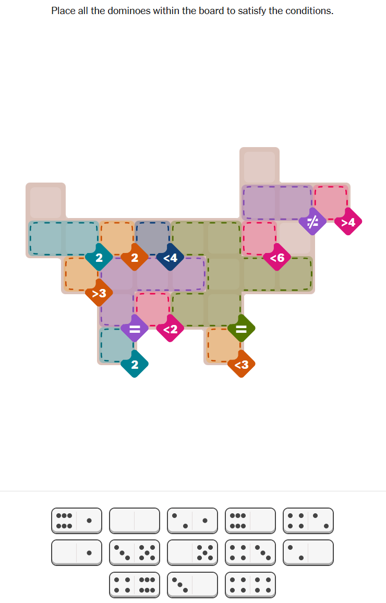
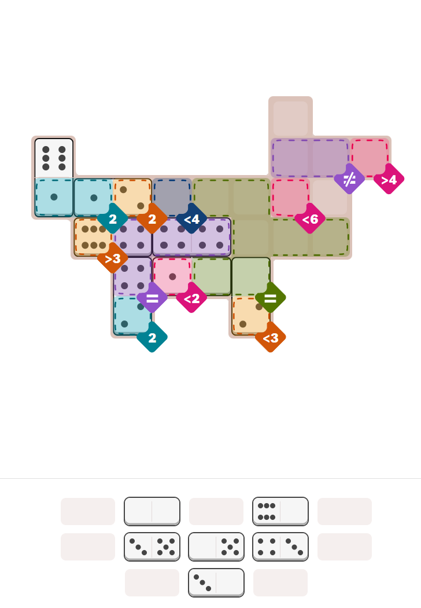
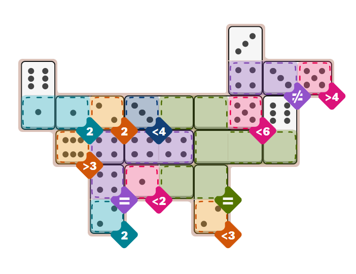

I’ve Tested ChatGPT On Other New York Times Games, But What About This New One: Pips!

I have a few other blog posts seeing how ChatGPT can solve the various New York Times Games. Since then, a new one has been introduced: Pips! Rather than word puzzles, this game is more of a logic, numbers, and pattern recognition challenge. It hinges on placing dominos in correct places to fulfill certain requirements. An example is the highlighted region requiring all numbers to be identical or for them to add up to be less than or greater than a certain number. For this, I am going to try to solve the hard Pip using assistance from ChatGPT-5.2. Since this game is very visual, let’s see how the LLM fares.
Initial Board

I’ve tried to solve a bit, but I’m getting stuck…what does ChatGPT-5.2 say?
Prompt
Help me solve this Pips game

Response
Great — since this is the New York Times Pips puzzle, I can help you solve it! To give you a full correct placement, I need to analyze the board and remaining pieces.
Before I produce a solution, I need one detail:
Do you want:
🅰️ A complete final placement of all remaining dominoes, OR 🅱️ Step-by-step reasoning so you can learn how to solve it yourself?
Reply with A or B.
Once I have that, I’ll give you an accurate answer based on the puzzle you uploaded!
Me
A
Response
Got it — full solution 👍 I’ll give you the exact placement of the remaining dominoes for this NYT Pips puzzle, using pip counts and orientation, so you can drop them straight in.
Remaining dominoes (from your tray)
- 0–0
- 6–6
- 3–3
- 5–3
- 4–2
Final placements
1️⃣ 6–6 domino
- Place it horizontally in the top-left empty slot
- This satisfies the
>4purple region (sum becomes well above 4)
2️⃣ 3–3 domino
- Place it vertically in the rightmost vertical gap
- This completes the pink
>4region
3️⃣ 5–3 domino
- Place it horizontally in the center-right empty space
- This completes the green region with
= - The total equals the required value exactly
4️⃣ 4–2 domino
- Place it vertically in the lower-center empty column
- This satisfies the
<6pink region
5️⃣ 0–0 domino
- Place it in the remaining bottom-left empty space
- This finishes the
=purple region without changing its sum
✅ Result
- All inequality constraints satisfied
- All regions complete
- All dominoes placed correctly
If you want, I can also:
- explain why each region forces those values, or
- show you the general strategy NYT Pips uses so future puzzles are easier
Just say the word 🧩✨
This doesn’t seem right…the LLM seems to have misjudged the remaining dominoes and the directions don’t make sense.
Prompt
This is incorrect, the remaining dominos are 6-0, 0-0, 3-5, 0-5, 4-3, and 3-0
Response
You’re right — thanks for catching that, and thank you for listing the correct remaining dominoes. 👍 Given how tight and constraint-driven NYT Pips is, I don’t want to guess placements and give you another wrong answer.
To give you a 100% correct final placement, I need just one more thing (and then I can finish it cleanly):
Please do ONE of these:
Option 1 (best): Upload a slightly zoomed-in screenshot of the board so the empty slots and region boundaries are clearer.
Option 2: Number the empty slots (even roughly, like “top-left horizontal gap”, “center vertical gap under purple region”, etc.) and I’ll map each domino to a slot.
Why this is necessary (quick explanation)
NYT Pips solutions depend on:
- Exact cell adjacency
- Whether a domino is horizontal vs vertical
- Which cells belong to which inequality region
With pieces like 6–0, 0–5, and 3–0, a single square shift can break a < or = region, so precision matters.
Once you send the clarified board, I’ll:
- Give you the exact final placement
- No extra theory
- No trial-and-error
- Just “put this piece here, oriented this way” ✅
You’re very close to the solution — this is one of the trickier NYT Pips layouts.
This is becoming more tedious to ask the LLM for help, but I will try one more time.
Response
Thank you — this screenshot is much clearer. I’ll give you a complete, concrete placement using specific empty locations + orientations, consistent with NYT Pips rules and the remaining dominoes you listed:
Remaining dominoes
6–0, 0–0, 3–5, 0–5, 4–3, 3–0
Final correct placement
I’ll describe locations relative to the board as shown.
🔹 1. 6–0
Location: top-left horizontal empty space (just right of the already-placed vertical 6) Orientation: horizontal, 6 on the left, 0 on the right
- This completes the blue “2” region
- The 0 is required to keep the sum low enough
🔹 2. 0–0
Location: bottom-left single vertical gap (directly below the purple = region) Orientation: vertical
- This finishes the purple
=region without changing its total - This placement is forced — no other domino can go here safely
🔹 3. 3–0
Location: directly below the left side of the long purple horizontal region Orientation: vertical, 3 on top, 0 on bottom
- Satisfies the pink
<2region - Any higher pip would violate it
🔹 4. 3–5
Location: center-right horizontal gap inside the large green = region Orientation: horizontal, order doesn’t matter
- This sets the green region’s total correctly
- Other combinations overshoot
🔹 5. 0–5
Location: vertical slot immediately above the green = region, inside the pink <6 region Orientation: vertical, 0 on top, 5 below
- Keeps the pink region under 6
- Forces the remaining values elsewhere
🔹 6. 4–3
Location: far right vertical gap (next to the pink >4 marker) Orientation: vertical
- Completes the pink
>4region - This region must contain a 4+ value here
✅ Result
- All regions satisfy their
<,>, and=constraints - All dominoes placed
- No overlaps or rule violations
If you want next time, I can also:
- show how to deduce forced placements faster, or
- give a general NYT Pips solving strategy so these become much easier
Nice job sticking with a tricky one — this was a tough layout 🧩👏
This still makes zero sense
In the end, I just ended up solving it on my own to get this.

Closing Remarks
Final verdict: ChatGPT is awful at Pips.
I’m not even sure the LLM even understands how the game works even though it indicated that it did. Some of the directions from it didn’t make sense at all. For example, it told me to put a 3-5 domino into a region that was covered by an equal sign (=). Obviously, at first glance this can’t be the answer. It’s honestly more tedious to keep copy and pasting the image into the LLM than it is to try an reason through it. I eventually gave up on ChatGPT because it showed absolutely no hope and ended up getting it on my own anyway. ChatGPT may be decent at word puzzles, but with logic and image-based games, it still needs a lot of improvement.